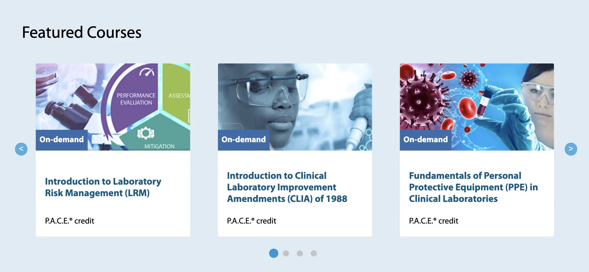
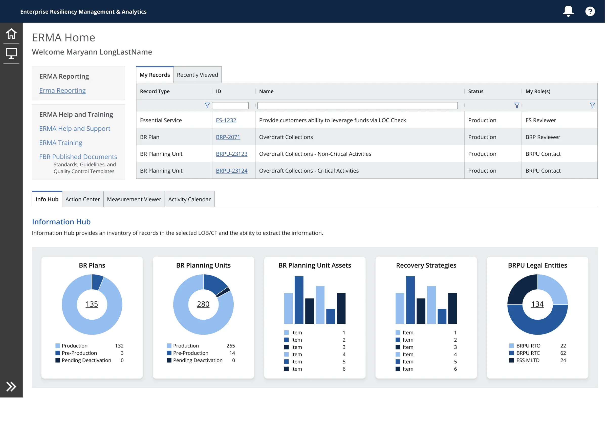
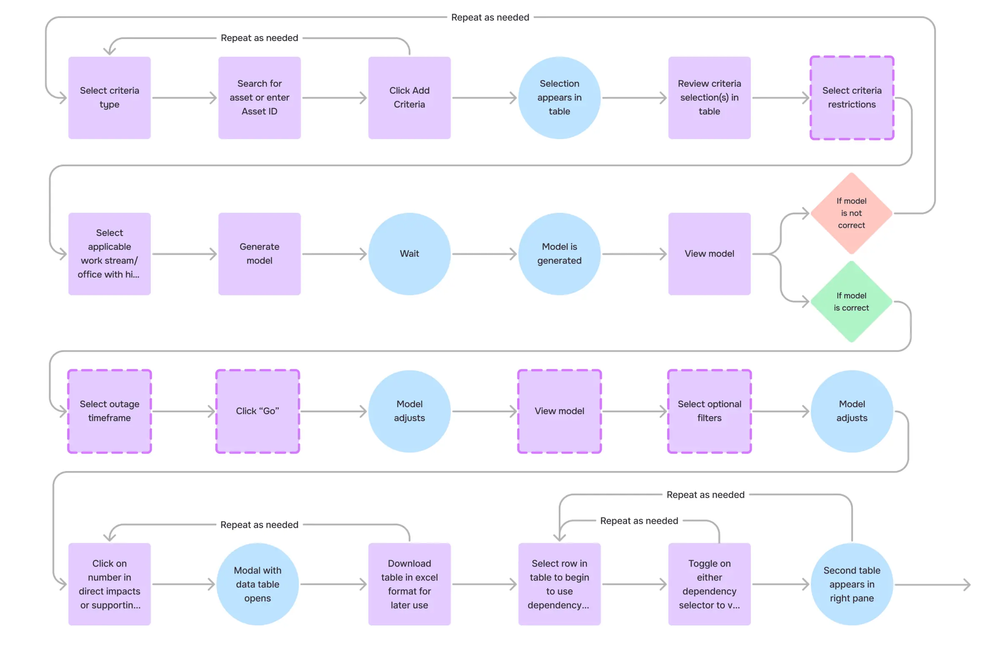
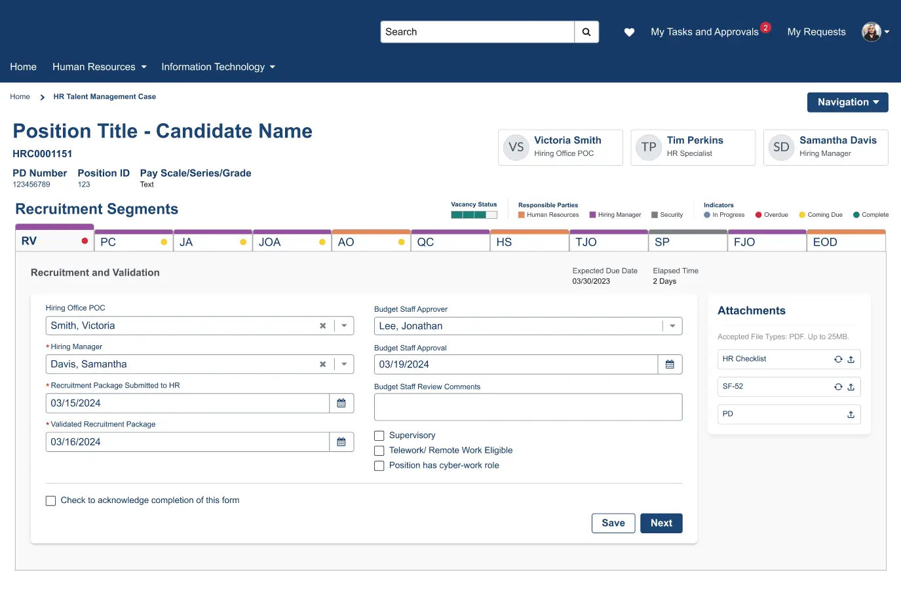
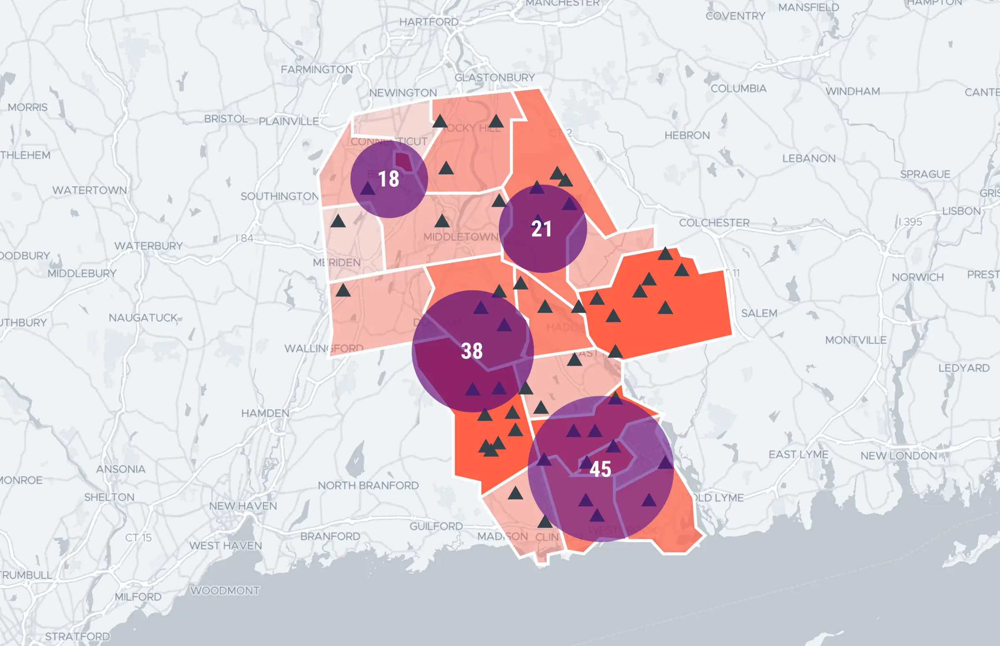

Senior Product Designer
Complex Systems
Data & AI Products
I design the systems that make complicated things usable — for federal agencies, banks, and transit riders.
Eight years leading product design across government, finance, and healthcare — turning ambiguous, high-stakes problems into shared design systems and shippable products. Most recently at Guidehouse; prior senior/lead work at JPMorgan Chase, the U.S. DOJ, and Sound Transit.
- 8 yrs
- Senior & lead roles
- $3M+
- In contracts influenced
- 4
- Sectors — gov, finance, health, transit
No. Case study Selected work, 01–05
Turning an unactionable accessibility audit into a strategy engineering could execute
An 8-month engagement, extended beyond scope, reframing a 5,000+ page backlog around systemic risk as Accessibility Lead.
~80% of issues traced to shared components
Read case studyof issues traced to shared components
A research deliverable that turned into a $9.2M client relationship
Design Lead for CDC OneLab REACH, grown from a solo research engagement into a 3-person team.
$9.2M in follow-on contracts
Read case study
Replacing a 1990s dashboard tool with a system built to stay affordable at scale
UX Design Lead for ERMA, a centralized resiliency and risk-management platform.
4-tab dashboard suite
Read case study
Modeling cascading infrastructure failure, grounded in one analyst's real workflow
Reporting & Analytics Lead — the Asset Outage Modeling Tool, built with a 3-person team.
8-month engagement
Read case study
One hiring process, built to work across agencies that don't share a tech stack
Design Lead for Time to Hire, built on a design system presented directly to the CIO.
4-month build
Read case study
No. Further work Note
06 Merck A project COVID shelved — and a client who came back with $500K in new work anywayA geospatial tool for understanding HPV vaccination coverage gaps in under-served communities. $500K+ in new contracts
07 YAFFED 2019 A decade-long advocacy fight, won partly on the strength of a websiteDesign Lead & Developer — brand, campaign site, and conversion strategy, built and coded solo. 3 conversion actions unified 08 Sport Shepherd A women's sports schedule aggregator, built from scratchSchedule aggregation, a social layer, AI-curated editorial, and two-sided monetization — built and iterated with a small team. Founder · 0 → 1 productAbout
I spearhead design and product work from early strategy through implementation and QA — not just the interface, but the research, the system it lives in, and the case for it to stakeholders ranging from individual contributors to a federal CIO.
That's meant leading design systems built to hold across organizations that don't share infrastructure (DOJ), scoping an unworkable 7,000-page accessibility audit down to what actually mattered (Sound Transit), and turning a single research deliverable into a multi-year, $9.2M client relationship (CDC). I've managed and mentored designers, presented technical and product direction to executive leadership, and stayed accountable for outcomes through implementation, not just the design file.
- CDC
- Johnson & Johnson
- U.S. Army
- Merck
- Dept. of Homeland Security
- J.P. Morgan Chase
- Tampa General Hospital
- U.S. Dept of Veterans Affairs
I grew up in Hell's Kitchen, NYC, and graduated from MICA with a BFA in Graphic Design. Outside of work, I play piano, take on home improvement projects, and spend time with my little brother.